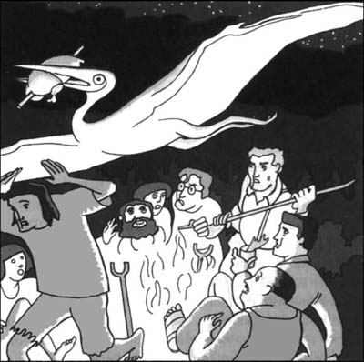

5
Listen to Part 1:

Chuyện khủng khiếp xảy ra
Đêm đó, chúng tôi dựng trại dưới vách đá cao dựng đứng màu đỏ dưới chân cao nguyên. Chúng tôi dựng lều và nhóm lửa nấu thức ăn.
Gần trại chúng tôi có một mỏm đá cao, gầy. Trên đỉnh mỏm đá có một cái cây đang mọc. Tôi nhớ ra mỏm đá này. Giáo sư Challenger đã cho tôi xem một bức ảnh chụp ở London. Vách đá và mỏm đá có trong bức ảnh đó.
Mỏm đá không liền với vách đá. Giữa mỏm đá và vách đá là một vực thẳm - một khoảng không gian trống rộng lớn.

Sáng hôm sau, sau bữa sáng, chúng tôi có một cuộc họp.
‘Làm sao chúng ta lên được cao nguyên?’ tôi hỏi. ‘Những vách đá rất cao. Chúng ta không thể trèo lên được.’
‘Có lẽ chả có cách nào lên đó được,’ Giáo sư Summerlee nói.
‘Tôi chắc là có,’ Giáo sư Challenger nói. Tôi nghĩ Maple White, người Mỹ, đã tìm ra một cách lên đó. Ông ấy đã vẽ một bức hình về một loài động vật ông ấy tìm thấy ở đó - loài khủng long stegosaurus. Tôi tin rằng loài khủng long stegosaurus ở trên cao nguyên. Nhất định phải có cách nào lên đó được.’
‘Hãy đi bộ vòng quanh cao nguyên,’ Lord Roxton nói. ‘Cao nguyên này giống như một vòng tròn khổng lồ. Chúng ta có thể đi bộ vòng quanh chân vách đá. Rồi chúng ta sẽ tìm được cách lên đó.’
Listen to Part 2:
Chúng tôi bắt đầu đi bộ. Việc đi bộ rất khó khăn. Đất phủ đầy đá vụn. Một hồi sau chúng tôi dừng lại. Chúng tôi nhìn thấy một số thứ trên mặt đất. Có mấy cái hộp đựng thực phẩm và chai rỗng và một tờ báo cũ nữa.
‘Ai đó đã cắm trại ở đây,’ Lord Roxton nói.
‘Đúng thế,’ Giáo sư Challenger nói. ‘Tờ báo này là báo Mỹ. Vậy nên đây hẳn là trại của Maple White.’
Có một cái cây đang mọc bên cạnh trại. Có một mảnh gỗ nhỏ được gắn trên cây. Mảnh gỗ có hình như một mũi tên. Nó chỉ về hướng tây.
‘Nhìn kìa!’ Lord Roxton nói. ‘Maple White đã để lại một dấu hiệu. Dấu hiệu đó cho chúng ta biết đường đi tiếp. Đi thôi!’
Chúng tôi đi bộ một quãng dài. Sau đó chúng tôi đến một chỗ mở hẹp trong vách đá. Chúng tôi nhìn thấy một mũi tên khác. Nó chỉ về phía chỗ mở.
‘Đi lối này này!’ Lord Roxton nói.
Không lâu sau chúng tôi đã đến cửa hang. Chúng tôi trèo vào hang. Hang này dẫn vào một đường hầm dài tối om. Chúng tôi bắt đầu đi dọc đường hầm. Lord Roxton đi trước. Bỗng nhiên anh ta dừng lại.
‘Trần hang sụp rồi,’ anh ta nói. ‘Đường hầm bị đá chặn mất rồi. Con đường đi lên cao nguyên của Maple White đã bị đóng.’
Chúng tôi không biết phải làm gì. Chúng tôi đã rất mệt. Vì vậy, chúng tôi quyết định quay lại trại. Chúng tôi không nói nhiều. Nhưng tất cả chúng tôi đều suy nghĩ một điều. Con đường của Maple White đã bị đóng. Vậy thì làm sao chúng tôi lên được cao nguyên đây?
Listen to Part 3:
Đêm hôm đó, một chuyện rất kỳ lạ đã xảy ra.
Lord Roxton đã bắn chết một con vật - một con hươu nhỏ. Chúng tôi nhóm lửa rồi nấu con hươu làm bữa tối. Chúng tôi đói và thịt có mùi thơm phức.
Bỗng có thứ xông ra từ bầu trời đêm đen. Tôi nhìn thấy một sinh vật khủng khiếp với đôi cánh khổng lồ. Nó có đôi mắt đỏ và cái cổ giống rắn. Nó có cái mỏ dài với nhiều chiếc răng nhọn.

Sinh vật đó bay qua trại chúng tôi. Chỉ một phút sau, nó đã biến mất. Bữa tối của chúng tôi cũng biến mất theo.
‘Nó cắp thịt chúng ta rồi!’ Lord Roxton nói.
Giáo sư Summerlee đang chăm chú nhìn lên bầu trời tối. Ông ta quay sang Giáo sư Challenger. ‘Challenger,’ ông ta nói khẽ. ‘Tôi rất xin lỗi. Tôi đã không tin những câu chuyện của ông về Thế giới đã mất. Nhưng bây giờ thì tôi tin ông rồi. Sinh vật đáng sợ đó là một con thằn lằn bay pterodactyl.’
‘Tốt lắm, Summerlee,’ Giáo sư Challenger nói.
Hai vị giáo sư bắt tay nhau. Lần đầu tiên, họ trở thành bạn của nhau.
Listen to Part 4:
Sáng hôm sau, Giáo sư Challenger đánh thức tôi dậy. Ông ấy hét lên và vung tay. Ông ấy có vẻ rất vui.
‘Chuyện gì vậy?’ tôi nói.
‘Dậy hết lên nào!’ ông ta hét. ‘Tôi đã tìm ra cách giải quyết rồi. Tôi biết cách chúng ta vào được cao nguyên rồi.’
‘Cách nào?’ tất cả chúng tôi cùng hỏi.
Giáo sư Challenger chỉ vào mỏm đá cao với cái cây ở trên đỉnh.
‘Chúng ta phải trèo lên đỉnh mỏm đá đó,’ ông ta nói.
Chúng tôi nhìn nhau. Chúng tôi không hiểu.
‘Nhưng,’ Giáo sư Summerlee nói, ‘có một vực thẳm giữa mỏm đá và cao nguyên. Tôi không hiểu…’
‘Đừng hỏi nhiều,’ Giáo sư Challenger nói. ‘Cứ làm như tôi bảo.’
Chúng tôi trèo lên mỏm đá. Gomez và Miguel cùng đi với chúng tôi. Họ mang theo súng chúng tôi. Sancho chờ dưới đất bên dưới, cùng những người da đỏ khác.
Listen to Part 5:
Cuối cùng, chúng tôi đứng cạnh cái cây trên đỉnh mỏm đá cao. Bây giờ chúng tôi có thể nhìn thấy bên kia, bên cao nguyên. Một khu rừng rậm rạp tối tăm mọc ở đó. Nhưng giữa chúng tôi và cao nguyên là vực thẳm.
‘Nào - nói đi, Challenger,’ Giáo sư Summerlee nói. ‘Chúng ta vượt vực thẳm thế nào đây?’
Giáo sư Challenger mỉm cười. Ông ta đặt tay lên cây.
‘Cái cây này sẽ giúp chúng ta,’ ông ta nói.
‘Tất nhiên rồi!’ Lord Roxton nói. ‘Một cây cầu!’
‘Đúng thế,’ Giáo sư Challenger nói. ‘Malone là người trẻ nhất và khỏe nhất. Cậu ta có thể chặt hạ cái cây này. Cái cây sẽ đổ ngang qua vực thẳm thành một cây cầu. Sau đó chúng ta có thể đi sang cao nguyên.’
‘Đó là một ý tưởng tuyệt vời,’ Summerlee nói.
Giáo sư Challenger đã mang theo một cái rìu. Ông ta đưa cho tôi. Tôi bắt đầu chặt cái cây. Cuối cùng, nó đổ. Nó đổ ngang qua vực thẳm với một tiếng động lớn.
Bây giờ chúng tôi đã có cầu sang Thế giới đã mất.
‘Để tôi sang trước,’ Giáo sư Challenger nói.
Listen to Part 6:
Ông ta ngồi lên cây rồi chậm rãi đi qua. Không lâu sau, ông ta đã đứng trên cao nguyên.
‘Cuối cùng! Cuối cùng rồi!’ ông ta reo lên.
Giáo sư Summerlee đi sau. Sau đó đến lượt tôi. Tôi không muốn nhìn xuống đất cách xa dưới chân mình. Lord Roxton là người cuối cùng đi qua cầu. Không lâu sau, tất cả chúng tôi đều đứng trên cao nguyên. Bên ngoài là các bụi rậm và cây nhỏ. Mỗi người đều đeo súng ở lưng.
Gomez và Miguel không đi cùng chúng tôi. Họ ở lại trên mỏm đá.
Giáo sư Challenger chỉ thẳng về phía trước. ‘Chúng ta đi theo hướng đó,’ ông ta nói.
Chúng tôi bắt đầu đi vào các bụi cây. Sau đó, một chuyện khủng khiếp đã xảy ra. Chúng tôi nghe thấy một tiếng động lớn. Chúng tôi quay lại và chạy về phía rìa của cao nguyên. Chúng tôi không thể tin vào mắt mình. Cái cây đã biến mất! Nó đã rơi xuống vực thẳm. Nó nằm trên mặt đất, cách xa dưới chân. Cây cầu của chúng tôi đã biến mất. Chúng tôi không thể rời khỏi Thế giới đã mất!
Mục lục
- Bìa
- Trang tiêu đề
- Trang bản quyền
- Mục lục
- Ghi chú về tác giả
- Ghi chú về truyện
- Nhân vật trong truyện
- 1 Tôi gặp Giáo sư Challenger
- 2 Câu chuyện của giáo sư
- 3 Cuộc hành trình của chúng tôi bắt đầu
- 4 Sông Amazon
- 5 Điều khủng khiếp xảy ra
- 6 Những sinh vật từ quá khứ
- 7 Cái chết trong đêm
- 8 Chuyến đi bộ kinh hoàng
- 9 Tù nhân của Người vượn
- 10 Cuộc chiến
- 11 Thoát khỏi Thế giới đã mất
- 12 Chúng tôi trở về London
- Các điểm để hiểu